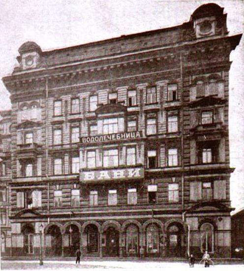
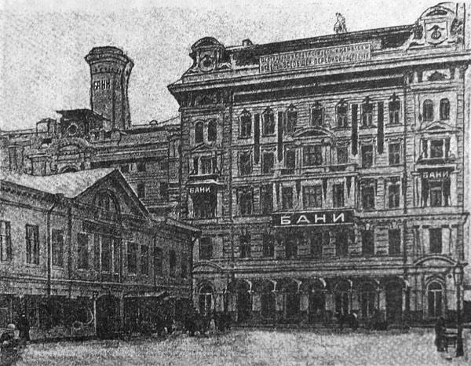

ДОХОДНЫЙ ДОМ И БАНИ Е.С.ЕГОРОВА

1875-1876, 1882-1885 гг. - акад.арх. граф Сюзор Павел Юльевич - перестройка
Ефим Савельевич Егоров, купец 1-й гильдии, старообрядец, статский советник, затем действительный статский советник, член Императорского Человеколюбивого общества, прославился широкой благотворительностью.
В 1875 г. Егоровым получено разрешение от Петербургской городской управы на строительство "6-этажного жилого каменного дома, выходящего фасадом на Большой Казачий переулок, и каменных, с лицевой стороны двухэтажных, а внутри двора - 5-этажных народных, общих, номерных и семейных бань". Строительство велось по проекту акад. арх. Павла Юльевича Сюзора, и за эту работу архитектор был удостоен золотой медали на выставке в Вене.
Строительство осуществлялось под девизом: «роскошь - удобство - гигиена - чистота». Здание было богато отделано снаружи и роскошно внутри. Бани стали известны как "Дом народного здравия". Внутри имелся зал с бассейном для плавания и проходами для охлаждения, восточные бани с душем Шарко. Имелось гидротерапевтическое отделение с сернистыми, соляными песочными и "другими видами лечебных бань". Работала парикмахерская и мозольный кабинет. Также при бане работал ресторан и кегельбан.
Бани открылись для посетителей осенью 1879 г., о чем 14 (26) августа 1879 г. сообщила петербургская газета "Голос".

Бани назывались по фамилии владельца Егоровские, но получили и название Казачьи, по Казачьему переулку, в свою очередь получившему такое наименование по находившемуся неподалеку Донскому казачьему подворью.
В советское время бани пришли в упадок. Из трех зданий, занимаемых банями, два были перестроены под жилые дома, и только одно осталось собственно банями. К концу 1993 года заведение полностью закрылось.
В 1994 году начался процесс возрождения бань. Уже к концу года были приняты первые посетители, а с 1995 года открыта парикмахерская, маникюрный и педикюрный кабинеты, работает солярий. В настоящее время Егоровские или, как они теперь называются, Казачьи бани - это большой банный комплекс с бассейном, номерами люкс и банями общего класса. Комплекс работает круглосуточно.
Егоровские бани, наверное, старейшие в Петербурге, они были построены еще в 1804 году, а затем дважды перестраивались (в 1875-1876, 1882-1885 гг.)